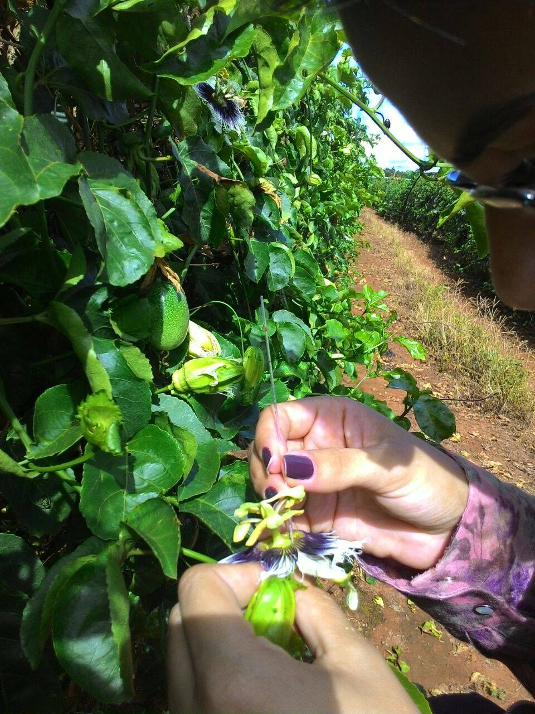
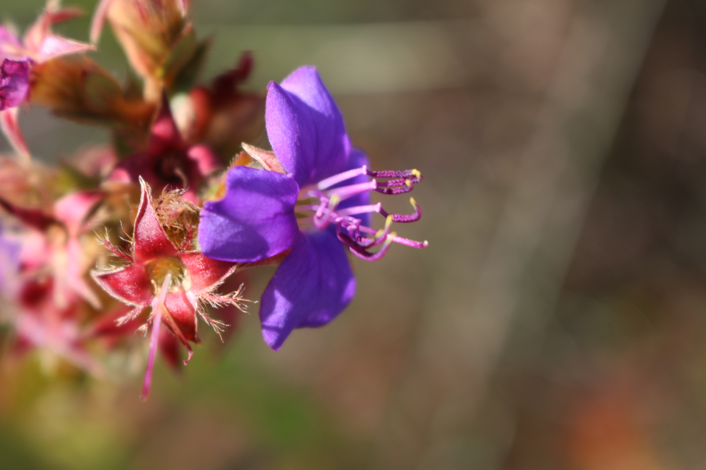
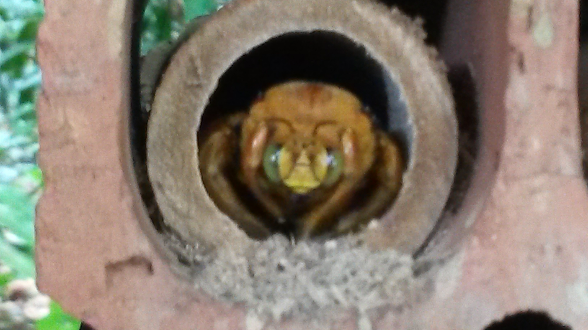
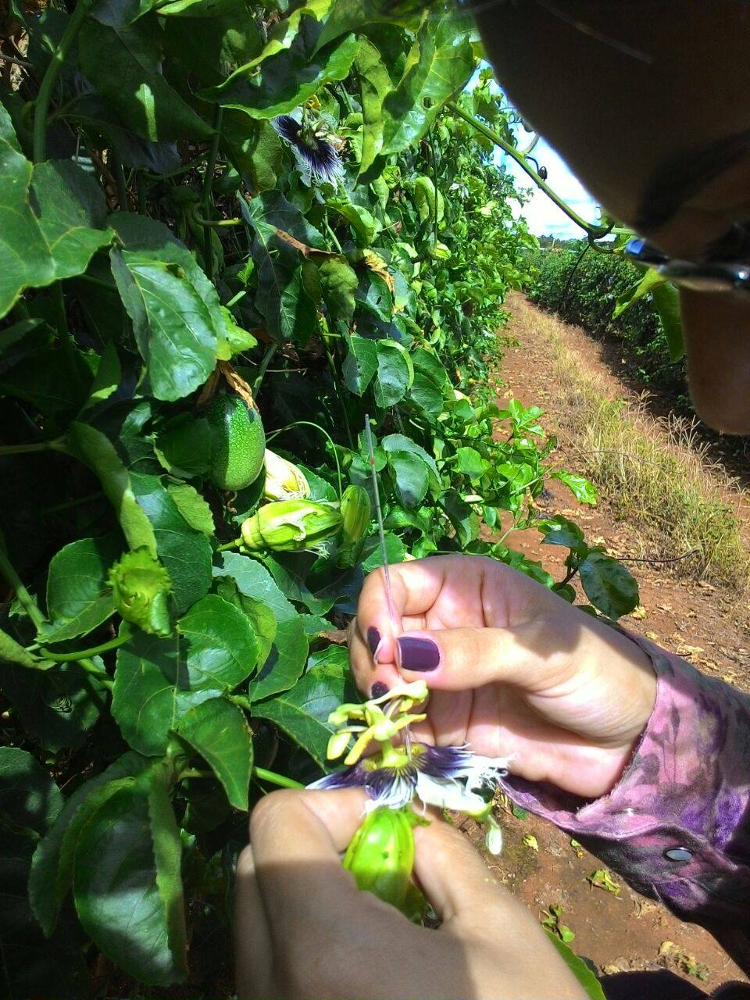
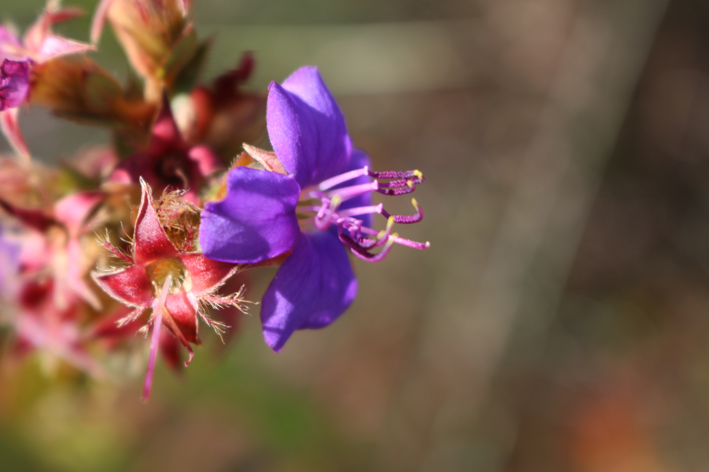
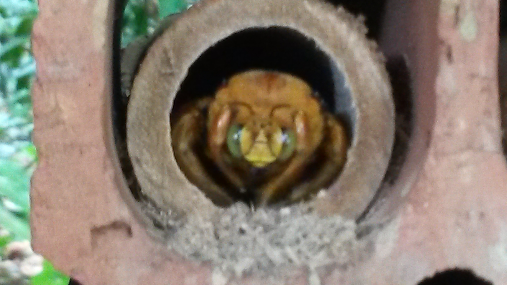
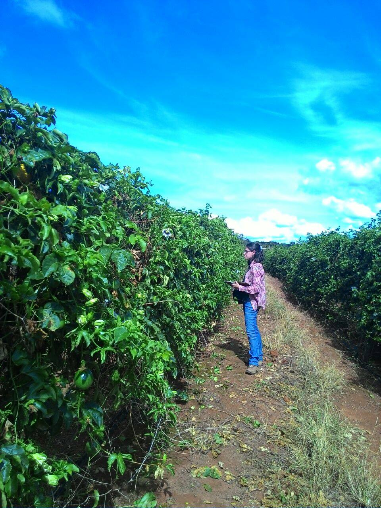
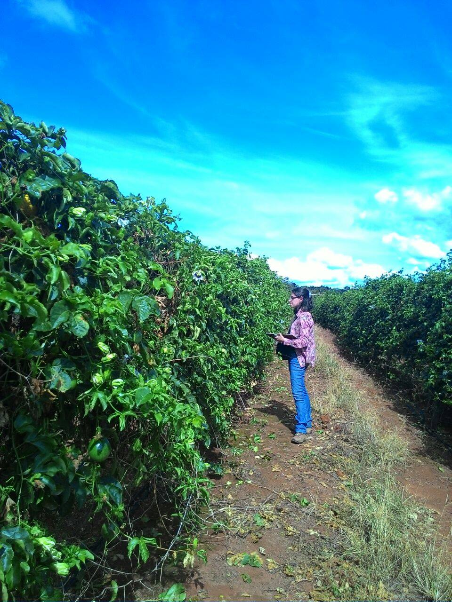

About

I am an evolutionary ecologist interested in ecological interactions, pollination systems, and the evolution of floral traits. Currently, I am a postdoctoral researcher at Uppsala University in the lab of Prof. Mario Vallejo-Marin. My work focuses on how pollinator behavior influences pollen transfer patterns and male reproductive success in buzz-pollinated species. I design and conduct controlled experiments in flight arenas to observe and record bee interactions with Solanum flowers, providing insights into the ecological and evolutionary dynamics of pollination.
Education
- 2019 - 2023 PhD in Ecology, Conservation and Biodiversity. Federal University of Uberlândia (UFU), Uberlândia, Brazil
Title: Evolution of pollen flowers in Angiosperms, 2023
Advisor: Vinícius Lourenço Garcia de Brito
Co-supervisor: Thaís Nogales da Costa Vasconcelos - 2017 - 2019 Master's degree in Ecology and Conservation of Natural Resources. Federal University of Uberlândia (UFU), Uberlândia, Brazil
Title: Evolution of stem dimorphism and its correlation with floral and reproductive traits in a family with pollen flowers, 2019
Advisor: Prof. Dr. Vinicius Lourenço Garcia de Brito
Co-supervisor: Prof. Dr. Ana Paula de Souza Caetano - 2012 - 2016 Bachelor of Biological Sciences. Federal University of Uberlândia (UFU), Uberlândia, Brazil
Title: Dynamics of nectar secretion in yellow passion fruit flowers (Passiflora edulis Degener) and its relationship with the visitation rate of pollinators and thieves
Advisor: Prof. Dr. Solange Cristina Augusto


 





 
